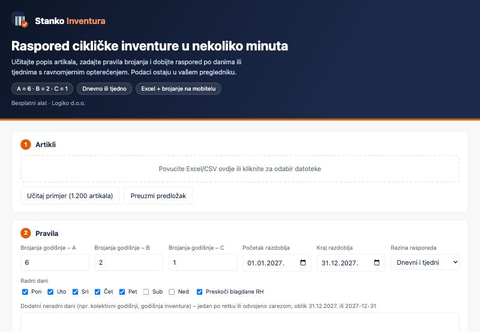
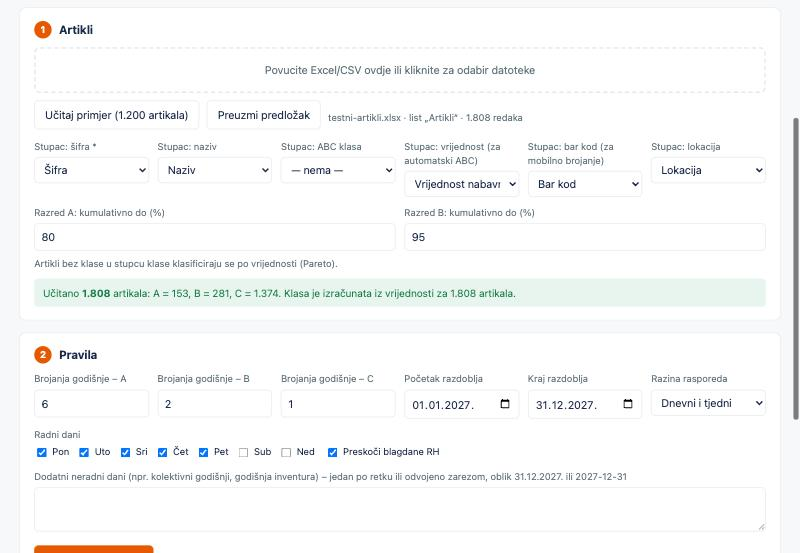
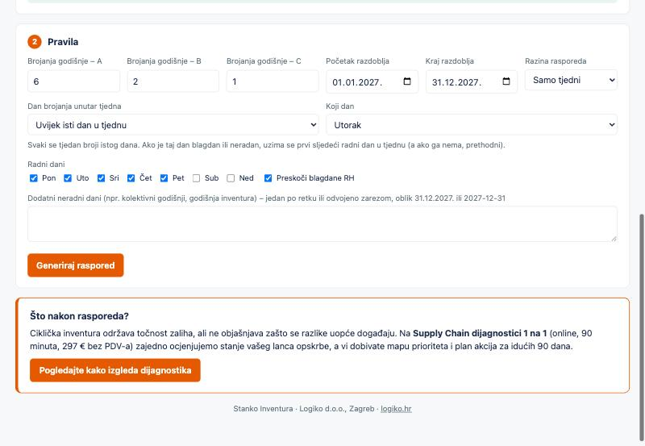
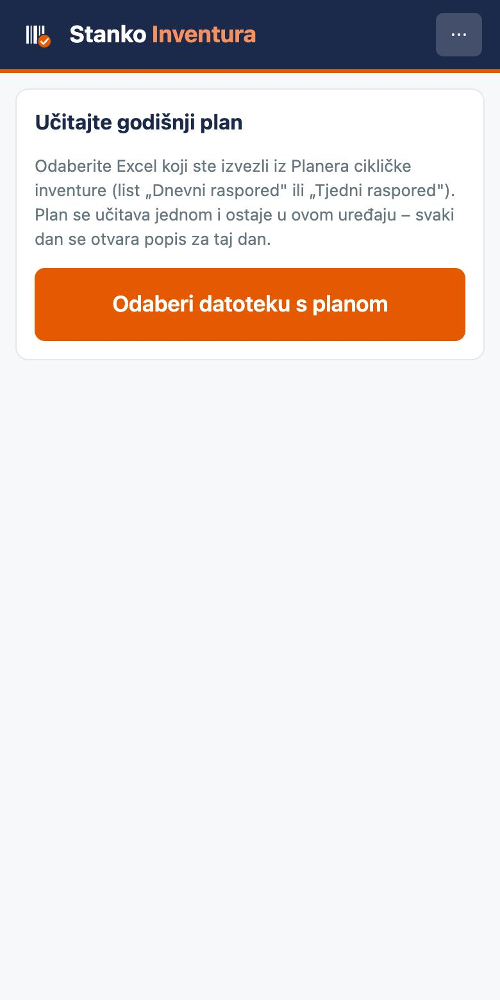
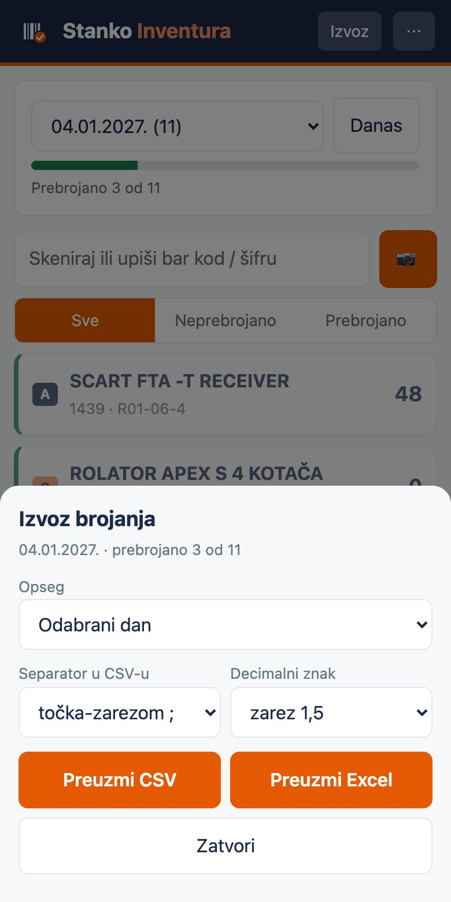

Stanko Inventura sastoji se od dva dijela. Planer radite na računalu, jednom godišnje: učitate popis artikala, a on napravi raspored brojanja za cijelu godinu. Aplikaciju za brojanje koristi skladištar na mobitelu, svaki dan: otvori popis za taj dan, skenira ili upiše artikl, upiše pronađenu količinu, a na kraju izveze rezultat.
Svi se podaci obrađuju u vašem pregledniku. Popis artikala ne napušta vaše računalo ni mobitel i nigdje se ne sprema.
Dio 1: Planer (na računalu)
1Otvorite planer
Planer se otvara u običnom pregledniku (Chrome, Edge, Safari). Na vrhu su pravila po kojima radi: A artikli šest puta godišnje, B dva puta, C jednom. Brojke možete promijeniti u koraku 2.

2Učitajte popis artikala
Povucite Excel ili CSV u okvir ili kliknite za odabir datoteke. Alat sam prepozna stupce šifre, naziva, vrijednosti i bar koda; ako se zabuni, ispravite ih izbornicima. Ako popis nema ABC klasu, alat je izračuna iz vrijednosti (Pareto, 80 % i 95 %), a granice možete promijeniti. Popunjava se jedan od ta dva stupca, za sve artikle: ili ABC klasa, ili vrijednost. Ako su popunjena oba, planer koristi vrijednost; ako je stupac popunjen samo za dio redaka, javlja grešku. Za probu postoji gumb „Učitaj primjer". Najlakše je krenuti od Excel predloška sa stupcima šifra, naziv, ABC klasa, vrijednost i bar kod, u koji upišete svoje artikle; opis svakog stupca i je li obavezan piše u bilješci na zaglavlju.

Format podataka: kako izbjeći greške
Najlakše je krenuti od Excel predloška. Ako svoju datoteku pripremate sami, provjerite sljedeće.
Tako izgleda predložak u Excelu. Svako zaglavlje ima bilješku (crveni trokutić u kutu ćelije; u Excelu se prikaže kad miš zadržite iznad nje). Ovdje su bilješke prikazane odmah ispod zaglavlja, u prvoj tablici.
| A | B | C | D | E | |
|---|---|---|---|---|---|
| 1 | Šifra1 | Naziv2 | ABC klasa3 | Vrijednost godišnje potrošnje (EUR)4 | Bar kod5 |
Šifra — OBAVEZNOJedinstvena šifra artikla, ista kao u ERP-u/WMS-u. Duplikati se preskaču. | Naziv — nije obaveznoPreporučuje se: skladištar ga vidi na popisu za brojanje. | ABC klasa — JEDAN OD DVAAko već imate klasu: A, B ili C za sve artikle. Stupac Vrijednost ostavite praznim. | Vrijednost — JEDAN OD DVAAko nemate klasu: godišnja vrijednost potrošnje u EUR za sve artikle; klasu izračuna aplikacija (A do 80 %, B do 95 %). Stupac ABC klasa ostavite praznim. Ako popunite oba, koristi se vrijednost. | Bar kod — nije obaveznoSamo za skeniranje kamerom. Samo znamenke, bez razmaka; ćelije su tekstualne da se vodeće nule ne izgube. | |
| 2 | ART-001 | Vijak M8 x 40 | ostavite prazno | 125000 | 3859000000018 |
| 3 | ART-002 | Matica M8 | ostavite prazno | 18400 | 3859000000025 |
| 4 | ART-003 | Podloška M8 | ostavite prazno | 950 | 3859000000032 |
| 5 | ART-004 | Rukavice radne, par | ostavite prazno | 120 | |
| 6 | … sljedeći artikli, bez praznih redaka … | ||||
| A | B | C | D | E | |
|---|---|---|---|---|---|
| 1 | Šifra1 | Naziv2 | ABC klasa3 | Vrijednost godišnje potrošnje (EUR)4 | Bar kod5 |
| 2 | ART-001 | Vijak M8 x 40 | A | ostavite prazno | 3859000000018 |
| 3 | ART-002 | Matica M8 | B | ostavite prazno | 3859000000025 |
| 4 | ART-003 | Podloška M8 | C | ostavite prazno | 3859000000032 |
| 5 | ART-004 | Rukavice radne, par | C | ostavite prazno | |
| 6 | … sljedeći artikli, bez praznih redaka … | ||||
Pregled formata po stupcima
| Stupac | Obavezan? | Format |
|---|---|---|
| Šifra | Da | Jedinstvena za svaki redak, ista kao u vašem ERP-u/WMS-u. Redak bez šifre i ponovljena šifra preskaču se (zadržava se prvi redak). |
| Naziv | Ne, preporučeno | Običan tekst. Skladištar ga vidi na popisu za brojanje. |
| ABC klasa | Jedan od dva: klasa ili vrijednost | Samo slovo A, B ili C (malo slovo je u redu), upisano za sve artikle. Drugi znakovi (npr. „D", „1") odbacuju redak. |
| Vrijednost godišnje potrošnje (EUR) | Jedan od dva: klasa ili vrijednost | Broj za sve artikle, bez teksta: 12500 ili 12.500,50 ili 12500.50. Oznake „€" i „EUR" te razmaci se prepoznaju. Prazna ćelija nije dopuštena (upišite 0 ako artikl nema potrošnje). |
| Bar kod | Ne, samo za skeniranje | Samo znamenke (EAN-8, EAN-13, GTIN-14), bez razmaka. Ćelije oblikujte kao tekst prije upisa: inače Excel briše vodeće nule ili broj prikaže kao 3,86E+12. Isti bar kod ne bi smio biti upisan kod dva artikla. |
- Zaglavlje u prvom retku i podaci odmah ispod njega. Bez praznih redaka, spojenih ćelija, međuzbrojeva i ukupnog retka na dnu.
- Podaci moraju biti na prvom listu Excela; ostali listovi se ne čitaju.
- Datoteke: .xlsx, .xls ili .csv. CSV može imati separator točku-zarez, zarez ili tabulator; kodiranje UTF-8 ili Windows-1250 (hrvatska slova) prepoznaje se samo.
- Popunite samo jedan od stupaca ABC klasa i vrijednost. Ako popunite oba, koristi se vrijednost. Ako je stupac popunjen samo za dio artikala, planer javlja grešku i ne generira raspored.
- Preporučeni opseg je do oko 10.000 artikala u godišnjem planu.
- Prije generiranja pročitajte poruku ispod okvira za učitavanje: pokazuje koliko je artikala učitano po klasama te koliko je redaka preskočeno i zašto.
3Zadajte pravila
Odaberite razdoblje (zadano je jedna kalendarska godina), radne dane i hoće li se preskočiti blagdani RH. Dodatne neradne dane (kolektivni godišnji, godišnja inventura) upišete u polje ispod. Razina rasporeda određuje što dobivate:
- Dnevni i tjedni: svaki artikl ima točan dan brojanja, uz prikaz po tjednima.
- Samo dnevni: popis za svaki radni dan.
- Samo tjedni: raspored određuje samo tjedan brojanja. Tada birate: svejedno koji dan (skladištar sam odlučuje unutar tjedna) ili uvijek isti dan u tjednu, npr. svaki utorak. Ako je taj dan blagdan, uzima se prvi sljedeći radni dan tog tjedna.

Tjedni su označeni kao T03/2027 (redni broj tjedna i godina) s razdobljem od prvog do zadnjeg radnog dana u tom tjednu.
4Generirajte raspored i provjerite validaciju
Kliknite „Generiraj raspored". Alat provjerava jesu li sva brojanja raspoređena, broji li se neki artikl dvaput istog dana, je li opterećenje ravnomjerno (idealno je razlika od najviše jednog artikla po danu) i drže li se brojanja istog artikla razumnog razmaka. Zelene kvačice znače da je sve u redu. Ako je razdoblje prekratko za pravila (npr. šest brojanja A artikla u četiri radna dana), to se prikaže kao greška.

5Pregledajte i preuzmite Excel
Tablica ispod pokazuje raspored po danima, po tjednima ili po artiklu, uz filter. Gumbom „Preuzmi Excel" dobivate datoteku s listovima Sažetak, Dnevni raspored, Tjedni raspored, Opterećenje i Po artiklu. Ta datoteka je vaš godišnji plan: i za ispis, i za mobilnu aplikaciju.

Dio 2: Brojanje na mobitelu
Aplikaciju otvorite u Chromeu na Androidu ili u Safariju na iPhoneu. Za rad kao prava aplikacija: na Androidu izbornik preglednika (tri točkice) pa „Instaliraj aplikaciju" ili „Dodaj na početni zaslon", a na iPhoneu Podijeli → „Dodaj na početni zaslon". Radi i bez internetske veze.
1Učitajte godišnji plan (jednom)
Prenesite Excel iz planera na mobitel (mail, OneDrive, kabel) i u aplikaciji kliknite „Odaberi datoteku s planom". Plan ostaje zapamćen u uređaju za cijelu godinu.


2Otvorite popis za danas
Aplikacija sama otvori popis za današnji dan (ili tjedan, ako ste birali tjedni raspored). Padajući izbornik gore mijenja dan, a gumb „Danas" vraća na današnji. Traka pokazuje koliko je prebrojano. Filteri „Sve / Neprebrojano / Prebrojano" pomažu da se ne preskoči ništa.
3Brojite: skenirajte ili birajte s popisa
Artikl možete pronaći na tri načina: dodirom na popis, kamerom (gumb 📷, radi u Chromeu na Androidu) ili upisom odnosno čitačem bar koda koji radi kao tipkovnica u polje na vrhu. Otvori se prozor za upis količine.

Upišite pronađenu količinu i pritisnite „Spremi i sljedeći" (ili Enter na tipkovnici). Strelice „‹ Prethodni" i „Sljedeći ›" vode kroz popis bez skeniranja; ako ste upisali količinu, spremi se prije prelaska. Gumb „Nema ga (0)" bilježi da artikla nema na polici.
Nepoznat bar kod ili artikl koji nije na današnjem popisu aplikacija ne odbija: bilježi ga kao „izvan popisa".
4Izvezite rezultat
Na kraju dana pritisnite „Izvoz". Birate dan ili sve dane, CSV (separator i decimalni znak prema vašem sustavu) ili Excel. Izvoz ima stupce: datum, šifra, bar kod, naziv, klasa, pronađena količina, napomena, vrijeme i status (prebrojano, nije prebrojano, izvan popisa). Datoteku ručno ili poluautomatski prenosite u WMS ili ERP.

Česta pitanja
Radi li aplikacija na iPhoneu?
Da, otvara se u Safariju i radi kao i na Androidu: popis, upis količine, izvoz. Za rad kao prava aplikacija u Safariju odaberite Podijeli → Dodaj na početni zaslon. To je važno i zbog podataka: Safari može obrisati spremljene podatke stranice koju dulje ne otvarate, a aplikacija dodana na početni zaslon je tome manje izložena. Skeniranje kamerom na iPhoneu koristi drugu metodu prepoznavanja nego na Androidu i novije je; ako vam ne radi, aplikacija ostaje potpuno upotrebljiva s popisa.
Za koliko artikala mogu učitati plan na početku godine?
Planer na računalu raspoređuje i desetke tisuća artikala (raspoređivanje je testirano na 50.000 artikala). Aplikacija za brojanje sprema u memoriju mobitela i plan i sva brojanja, a preglednik tome daje oko 5 MB. Plan zauzima otprilike 0,27 MB na svakih 1.000 artikala, a svako spremljeno brojanje oko 77 bajtova (nešto više ako upisujete napomene). Cjelogodišnje brojanje stoga zauzme još otprilike pola toga. U brojkama, plan i brojanja zajedno na kraju godine: oko 1,2 MB za 3.000 artikala, oko 4 MB za 10.000 artikala. Sigurno je do otprilike 10.000 artikala. Za veća skladišta plan podijelite po skladištu ili skupini artikala, ili povremeno izvezite brojanja i obrišite ih iz aplikacije.
Mogu li brojati bez kamere?
Da. Kamera nije potrebna. Kad otvorite popis za taj dan, svaki artikl je na popisu: dodirnete ga, upišete količinu i pritisnete „Spremi i sljedeći" ili strelicama idete kroz popis. Možete i upisati šifru ili bar kod u polje na vrhu, ili koristiti ručni čitač koji radi kao tipkovnica.
Što ako skeniram krivi artikl?
Aplikacija ne može znati što ste namjeravali skenirati, pa ovisi o tome gdje je taj kod. Ako artikl jest na današnjem popisu, otvori se njegov prozor s nazivom, vi vidite da to nije on, zatvorite prozor i ništa se ne sprema. Ako je artikl u planu ali za neki drugi dan, javi „Nije na popisu za ovaj dan" i kaže kad je planiran. Ako je kod nepoznat, javi to isto, a ako ipak upišete količinu, bilježi se kao „izvan popisa". Ako ste već spremili količinu na krivi artikl, otvorite ga ponovno i pritisnite „Poništi".
Što ako isti artikl skeniram dvaput?
Ništa se ne briše tiho: prozor pokaže „Već prebrojano: količina (vrijeme)". Spremanjem upisujete novu količinu, „Poništi" briše brojanje.
Što ako neki dan ne prebrojim?
Ništa se samo od sebe ne pomiče i ništa se ne gubi. Neprebrojane stavke ostaju u planu pod svojim datumom, a na početnom zaslonu pojavljuje se upozorenje „Zaostaci: N neprebrojanih u M prethodnih dana". Gumb „Prikaži" otvara sve zaostatke na jednom popisu, a svaki prebrojeni zaostatak bilježi se pod svojim izvornim datumom. Do prošlog dana možete doći i u padajućem izborniku s datumima.
Gdje vidim cijeli izvještaj: što je prebrojano iz plana i koliko puta?
Gumb „Izvještaj" u zaglavlju aplikacije otvara pregled u tri dijela. Sažetak pokazuje koliko je brojanja u cijelom planu, koliko je prebrojano, koliko je zaostataka iz prošlih dana i koliko još predstoji, uz udio po razredima A, B i C. Po artiklu za svaki artikl pokazuje „prebrojano / planirano" (npr. 3 / 6 za A artikl koji se u godini broji šest puta), koliko zaostaje te datum i količinu zadnjeg brojanja. Po danima (ili tjednima) pokazuje udio prebrojanog za svaki dan plana. Gumb „Preuzmi izvještaj (Excel)" daje isto u datoteci, uz list „Sva brojanja" sa svakim spremljenim brojanjem.
Pamte li se brojanja ako ih ne izvezem?
Da. Brojanja ostaju spremljena u mobitelu za sve dane, dok ih ne obrišete (izbornik ⋯ → „Obriši plan i sva brojanja") ili dok netko ne očisti podatke preglednika. Izvoz „Svi dani (samo prebrojano)" izvozi sve što je spremljeno, a „Odabrani dan" samo taj dan. Ipak preporučujem izvoz barem jednom tjedno (ili na kraju svakog dana ako ga odmah prenosite u WMS ili ERP), jer su podaci samo na tom jednom uređaju: ako se mobitel izgubi, pokvari ili mu se očisti memorija, brojanja su izgubljena.
Čiji je to prostor i koliko ga zauzima?
Prostor je na vašem mobitelu, u memoriji preglednika za ovu stranicu, kao podaci neke aplikacije. Ne zauzima prostor na našem poslužitelju ni na GitHubu i nitko drugi nema pristup tim podacima. Za uobičajeno skladište (nekoliko tisuća artikala) to je oko jedan megabajt, dakle zanemarivo prema ostatku mobitela. Podaci ostaju dok ih ne obrišete (izbornik ⋯ → „Obriši plan i sva brojanja"), dok ne očistite podatke preglednika ili ne uklonite aplikaciju s početnog zaslona.
Radi li bez internetske veze?
Da. Nakon prvog otvaranja aplikacija i plan rade bez interneta, a veza je potrebna samo ako je prvi put otvarate ili učitavate novu verziju.
Gdje su moji podaci?
Samo u vašem pregledniku i na vašem mobitelu. Ništa se ne šalje na poslužitelj.
Može li brojati više ljudi odjednom?
Ova je verzija zamišljena za jednog skladištara. Za više uređaja svaki izveze svoj dio, a rezultate spajate u Excelu.
Treba li mi novi plan sljedeće godine?
Da. Planer ponovno pokrenete s novim razdobljem i popisom artikala, izvezete Excel i učitate ga u aplikaciju (izbornik ⋯, „Učitaj novi plan").